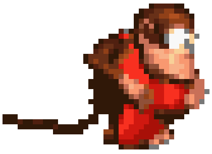

Tweek - Player Profile

About Tweek
Real Name: Gavin Dempsey
Game: Super Smash Bros. Ultimate
Team: Solo
Bio: Tweek is a versatile and adaptable player with a unique playstyle that has earned him multiple tournament victories.
Stage Performance
- Most Common Starter: Pokémon Stadium 2 (Picked: 60.00%)
- Preferred Counterpick: Town & City (Picked: 15.22%)
- Best Stage (Win %): Final Destination (Win Rate: 85.00%)
- Worst Stage (Win %): Lylat Cruise (Win Rate: 45.00%)